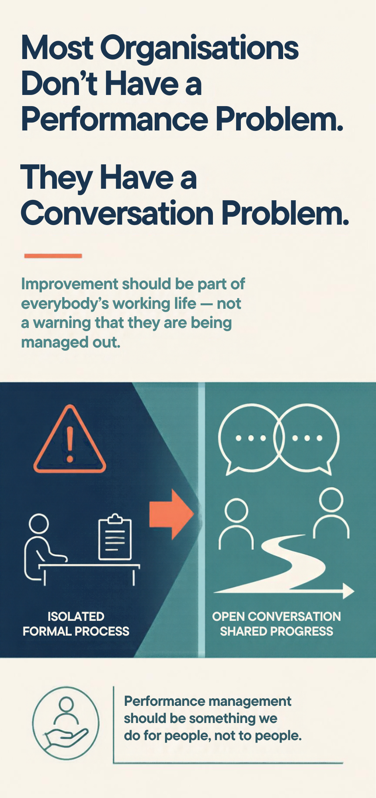
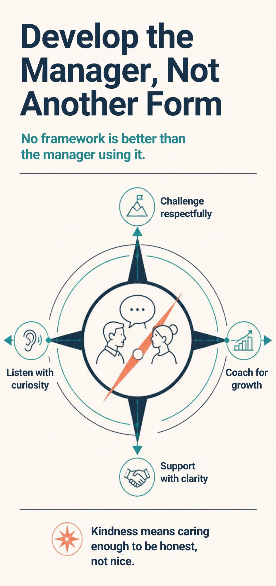

Over the years, I’ve worked with organisations of all shapes and sizes. When performance management comes up, I’ve noticed how quickly the attention turns to the people who aren’t performing.
The discussion quickly shifts towards capability concerns, difficult conversations, formal processes and Performance Improvement Plans, even though these situations usually involve only a small proportion of the workforce. Most employees sit somewhere between exceptional and struggling. They quietly keep the organisation moving forward every day, yet often receive the least meaningful performance conversations.
Somewhere along the way, many organisations have allowed the Performance Improvement Plan, or PIP, to become synonymous with failure. Mention a PIP and people rarely think about development, support or future success. They think about being managed out of the business.
The irony is that a Performance Improvement Plan is, in theory, exactly what every employee should have. At its core, it is simply a structured conversation about expectations, performance, goals, support and progress. These are conversations that should be relevant whether someone is excelling, cruising or struggling.
By using these plans only when someone is underperforming, we have created an unintended consequence: improvement itself starts to feel negative.
The world’s best athletes constantly review their performance. Senior leaders invest in coaching. Successful businesses regularly assess what is working and what could be better. Improvement is widely recognised as a strength, right up until the point we formalise it in the workplace. Suddenly, it becomes something to fear.
The problem may not be the plan
The problem lies in how and when we use the plan.
In many organisations, the people who receive the most structured support are those whose performance is causing concern. Meanwhile, high performers are often left alone because they are delivering results. Consistent performers continue doing what they have always done, while those with untapped potential might receive little more than an annual review and a generic development objective. The result is that performance management becomes something we do to people rather than something we do for people.
From my experience, every organisation has people who are flying, people who are dependable, people still finding their feet and people whose performance has dipped. A few will need more significant intervention, but the wider challenge is getting the best from everyone rather than concentrating most of the attention on that final group.
The high performer might need stretch, development or a new challenge. The dependable performer may want recognition, broader exposure or greater influence. Someone else may value flexibility over promotion, while another person might simply enjoy doing their current role exceptionally well and have no desire to move up the organisational ladder.
Too often, organisations apply the same performance framework regardless of the individual’s ambitions, aspirations or circumstances. The conversation becomes process-driven rather than people-centred.
What if everybody had a meaningful plan?

This does not mean giving everyone a lengthy document filled with corporate language or creating another bureaucratic exercise to complete once a year. It means having a regular and purposeful conversation about contribution, aspirations, expectations and growth.
Many organisations already do this through 90-day plans, OKRs, quarterly objectives, personal development plans or career conversations. The terminology varies, but the principle remains the same: there is clarity around what matters, regular reflection on progress and an opportunity to adapt as circumstances change.
Importantly, the conversation becomes future-focused. Rather than asking, ‘What have you done wrong?’, it asks, ‘What are we trying to achieve together?’ That shift matters because it connects the direction and ambition of the person with the direction and ambition of the business.
No framework is better than the manager using it
Of course, no framework is ever better than the manager using it, and this is often where organisations encounter difficulties.
Many managers are handed forms, templates and scripted questions because organisations want consistency. While structure has its place, I sometimes wonder whether these tools are compensating for something else. Can managers confidently lead a meaningful performance conversation without relying on a sheet of prescribed questions? Can they challenge respectfully when performance falls short, discuss ambition, motivation and potential, and connect an individual’s aspirations with the needs of the business?
Can they also be kind without simply being nice? There is an important difference. Being nice often means avoiding discomfort, skirting around difficult messages and delaying conversations that need to happen. Being kind means caring enough to be honest. It means setting clear expectations, providing meaningful feedback and helping people understand where they stand, even when the message is uncomfortable.
Those conversations require judgement, empathy, confidence and courage. No template can fully replace those skills.
What about the people who are cruising?

The challenge becomes even greater when we move beyond obvious performance issues. In my experience, many managers can identify poor performance. What they often struggle with is supporting people who are performing perfectly well but may have become comfortable, disengaged or simply stuck.
I regularly hear comments such as, ‘It’s finance. They’re measured on getting people paid and completing month-end, so there isn’t much else I can give them.’ At face value, that sounds reasonable. Some roles are structured, cyclical and process-driven. The work is predictable, the outputs are measurable and success can appear relatively straightforward.
Someone in payroll, finance, administration or another process-driven role may still want more from their work. That could mean improving a system, mentoring a colleague, contributing to a project, understanding more of the wider business or building expertise that helps them do their current job even better. A structured role does not have to place limits on someone’s growth.
In many cases, development is not constrained by the job itself. It is constrained by the quality of the conversation taking place around it. Managers who focus solely on tasks and outputs can easily conclude that there is little left to discuss. Managers who are genuinely curious about people’s aspirations, strengths and interests often discover opportunities that would otherwise remain hidden.
Different people need different conversations

The most valuable performance conversations go far beyond whether somebody completed a task on time or achieved a particular target. At their best, they help people understand how they contribute, where they can grow and how their ambitions connect with the wider direction of the organisation. What changes is the emphasis, because different people need different conversations.
For high performers, the conversation needs to look beyond the results they are already delivering. It should explore whether they are still learning, which responsibilities could broaden their contribution and what might persuade them to stay. Without that depth, organisations can be surprised when talented people leave, despite appearing successful and engaged on paper.
For dependable performers, meaningful conversations provide something equally important. Many organisations rely heavily on employees who consistently deliver, often without attracting much attention. They turn up, do a good job and quietly keep everything moving, yet because they are neither excelling dramatically nor struggling visibly, they can easily become overlooked. Taking the time to understand what motivates them, recognise their contribution and explore how they can continue to grow can have a significant impact on both engagement and retention.
The same applies to employees who may have settled into a level of comfort. Managers often describe these individuals as ‘cruising’, but that label sometimes says more about the quality of the conversation than it does about the individual. Someone who appears comfortable today might be looking for challenge, development or a fresh perspective, but nobody has taken the time to explore it. Equally, they may be perfectly content where they are, yet still have valuable ideas, experience and potential that could be better utilised.
For individuals whose performance is genuinely below expectations, a different type of conversation may be needed. Even then, the most effective discussions focus on understanding causes rather than simply measuring symptoms. Performance data can tell us what is happening, but it rarely explains why. That requires curiosity, empathy and a genuine willingness to listen.
Develop the manager, not another form

Developing that capability takes more than giving managers a new form. It requires practice, feedback and support to handle the conversations that cannot be scripted: when to challenge, when to coach, when to listen and when to be clear that performance must improve.
Managers need the confidence to hold conversations that are flexible rather than scripted. They need to understand when to challenge, when to coach and when to support. They need to recognise that not everybody defines success in the same way and that meaningful development looks different for different people.
The opportunity is not to create a more sophisticated framework, but to develop managers who can hold better conversations. They need to challenge and support people, set clear expectations without losing empathy, and understand that development and discipline are not the same thing. That means being able to stretch a high performer, help an underperformer improve and create an honest dialogue with everyone in between.
So, should everybody have a Performance Improvement Plan?
Perhaps not in the form we recognise today. The label has become too closely associated with failure, formal process and exit. However, everybody should have a meaningful plan for how they will contribute, develop and succeed, supported by regular conversations that matter.
Performance management should not be about catching people out or managing them out. It should help people contribute, develop and succeed through honest conversations that happen often enough to make a difference.
Call it a Performance Improvement Plan, a 90-day plan, an OKR or a development plan. The label matters less than whether the conversation is honest, useful and happening often enough to make a difference. Improvement should feel like a normal part of working life, not the point at which somebody realises a formal process has begun.
The real question is not whether we need fewer Performance Improvement Plans. It is why we still reserve meaningful performance conversations for people who are struggling, instead of making them part of how we help everyone succeed.